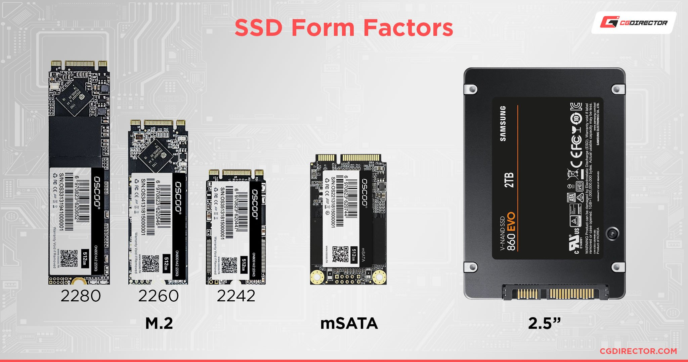

Documento de introduccion a dos modulos clave del ciclo: Montaje de Equipos y Seguridad Informatica.
A.Componentes Clave de un PC (Hardware)
B.Consejos de Ciberseguridad Basica
El hardware es el nucleo del sistema. Aqui estan los elementos esenciales para que un equipo microinformatico funcione correctamente:

*(Imagen: Un disco SSD, un componente vital para el almacenamiento actual)*
La seguridad pasiva es critica. Estos 5 consejos son la base para proteger cualquier sistema:

*(Imagen: Un concepto visual de proteccion digital y ciberseguridad)*
| Estrategias Fundamentales de Proteccion | |
|---|---|
| Contraseñas Robustas y Unicas | Usar combinaciones largas (max 12 caracteres), con mezcla de tipos y, crucialmente, no repetir la misma clave en multiples servicios |
| Actualizaciones Periodicas (Parcheo) | Mantener el Sistemas Opertaivo y el software de terceros sl dia para corregir vulnerabilidades de seguridad conociadas (exploits) |
| Doble factor de Autenticificacion (2FA) | Añadir uan capa de seguridad que requiere un segundo codigo (normalmente desde el movil) ademas de la contraseña. Es la defensa mas efectiva contra el robo de credenciales |
| Copias de Seguridad (Backup) | Guardar regularmente los datos importantes en un medio externo y descontento (regla 3-2-1). Permite la recuperacion ante fallos de hardware ante fallos de hardware o ataques de ramsoware |
| Uso de Antivirus/Firewall | El firewall bloquea el trafico de red no autorizado, mientras que el antivirus/anti malware protege contra codigos maliciosos en el equipo local |
Para aprender mas sobre Ciberseguridad, visita el Portal nacional de Ciberseguridad (INCIBE) (Este enlace se abre en una nueva pestaña).
Volver al indice